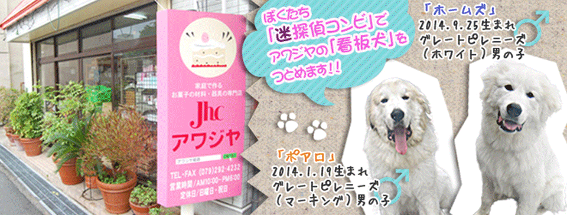
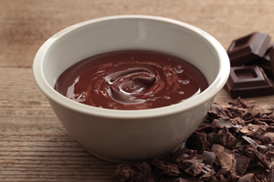

お菓子作りの豆知識

生チョコレートとは？
生チョコレートというのはチョコレートに洋酒や生クリームを加えて溶かし、これを冷やしたものです。生チョコレートはパリパリのチョコではなく、とても柔らかい食感をしていますね。 生チョコとして食べられるように販売されている商品は、ココアパウダーや抹茶パウダーなどをまぶし、食べやすい大きさにカットされていることが多いです。

セルクルって何？
セルクル(フランス語: cercle)は、ケーキ、タルト、クッキーなど、主に洋菓子を作るときに使用する型もしくは枠で底のないもの。洋菓子だけでなく、他の菓子や料理に使うこともある。調理用の型の総称は強いて言えばムール(フランス語: moule)。
転写シート
カカオバターで模様が印刷されたポリエチレンのシートで、仕上げ用に薄く塗ったチョコレートが乾かないうちに、チョコレートよりも一回り大きめに切ったシートをはりつけ、そのまま固まったら静かにはがす。
所 在 地：姫路市東雲町1丁目34
TEL. FAX ：079-292-4232
営業時間：AM10：00～PM6：00
定 休 日：日曜日、祝日